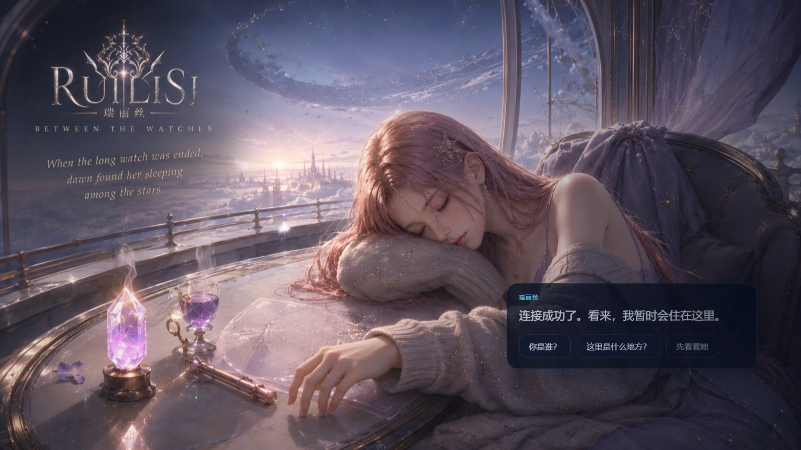

瑞丽丝原型 · 性能优化对比
P0 v0.7.1a · 2026-08-22 · 实测环境：Edge 稳定版 / 1920×1080 / 视频背景播放中
优化前 · 初始状态
40.1 fps
▼ 明显掉帧，视觉卡顿
优化后 · 初始状态
59.6 fps
▲ +48.6% · 接近满帧
优化前 · 评审面板打开
47.1 fps
▼ 面板叠视频时掉帧明显
优化后 · 评审面板打开
60.2 fps
▲ +27.8% · 满帧
帧率实测（6 秒 rAF 采样）
| 场景 | 优化前 | 优化后 | 提升 |
|---|
| 初始状态（PT-01/02，视频背景播放） | 40.1 fps | 59.6 fps | +48.6% |
| 打开评审抽屉（22px 毛玻璃大面板） | 47.1 fps | 60.2 fps | +27.8% |
优化内容
移除 17 处 backdrop-filter 实时模糊
面板底色提浓补偿玻璃感
禁用星空 drift 动画（全屏重绘）
视频层强制 GPU 合成层
页面隐藏时自动暂停视频
视觉对比（优化前 / 优化后）

优化后 · 评审面板（60.2 fps）
说明：毛玻璃在 Chromium 中对视频背景每帧重新采样+模糊，是主要瓶颈；星空 drift 动画每帧移动全屏 background-position，强制整层重绘。二者移除后 GPU 负载大幅下降。若在更低配机器上仍感吃力，备选方案为将视频降为 30fps 或 720p（解码负载减半），视觉差异极小。